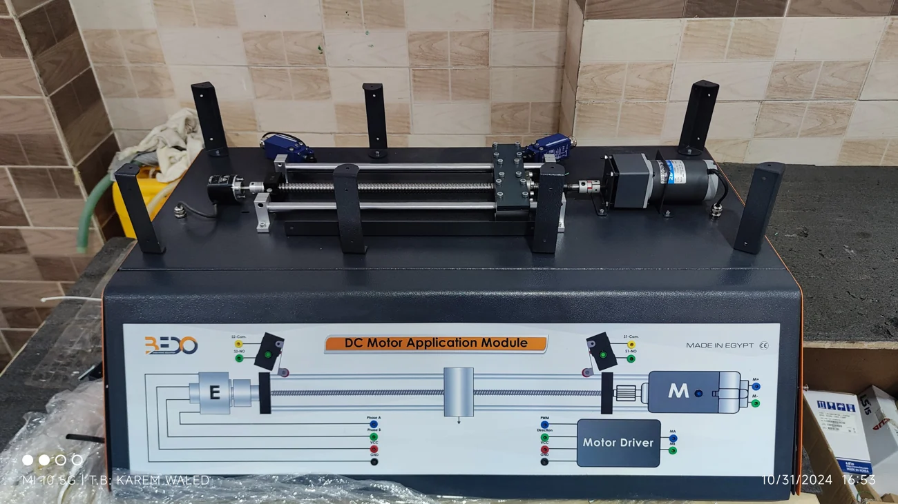

EVIDENCE AVAILABLE
- A working physical trainer documented in the project gallery; measured performance data is not available for publication.
- Project evidence is retained in the portfolio archive.
KAREM WALED — ROLE & CONTRIBUTION
Embedded / Physical R&D prototype · Professional work
An educational electromechanical rig that makes motor drive, direction, transmission, travel, and limit behavior observable.

01 / ENGINEERING PROBLEM
Turn an abstract motor-control lesson into a physical mechanism whose electrical input and mechanical response can be studied directly.
02 / ENGINEERING APPROACH
Combined a motor, mechanical transmission, guided motion, and travel constraints in a bench-top demonstrator.
Iterated the assembly and integration so the control and mechanical behaviors could be tested together.
03 / RESULT & SCOPE
A working physical trainer documented in the project gallery; measured performance data is not available for publication.
04 / KAREM WALED — RESPONSIBILITY
05 / SYSTEM BREAKDOWN
06 / DOCUMENTATION STATUS
This page records the confirmed project scope, role, and available evidence. A step-by-step implementation record will be added only when original source files, engineering notes, or media can support it.
EVIDENCE AVAILABLE
SCOPE & LIMITATIONS
07 / SOURCE & EVIDENCE MAP
The available engineering record is documented on this page.
PROJECT GALLERY
Select a figure to inspect it at full size.